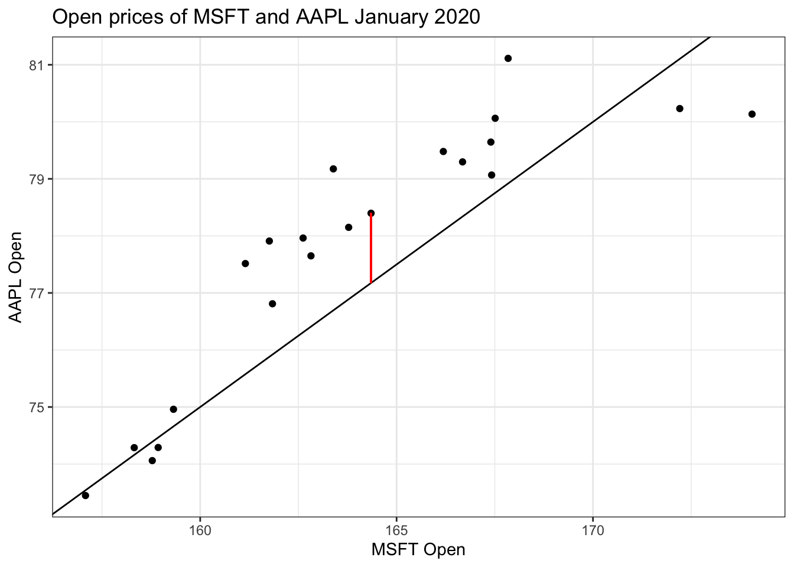
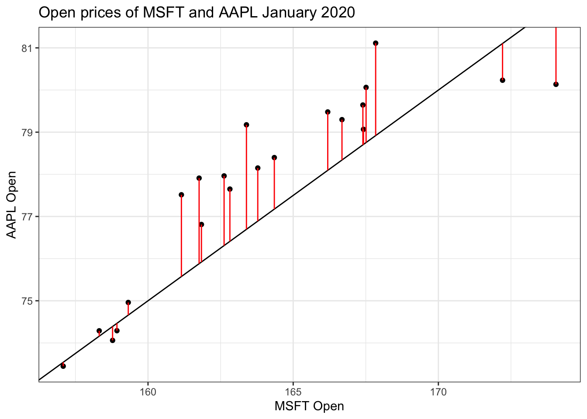

library(tidyverse)
library(tidymodels)Simple Regression
STA 101
Bulletin
- lab 02 due tonight
- exam 01 next week
Today
By the end of today you will…
- understand the grammar of linear modeling, including \(y\), \(x\), \(\beta\), \(\epsilon\), fitted estimates, residuals and \(R^2\)
- add linear regression plots to your 2D graphs
- be able to write a simple linear regression model mathematically and
- fit the model to data in R in a
tidyway
Getting started
Download this application exercise by pasting the code below into your console (bottom left of screen)
download.file("https://sta101-fa22.netlify.app/static/appex/ae6.qmd",
destfile = "ae6.qmd")Load packages and data
Today’s data is Apple and Microsoft stock prices from January 1st 2020 to December 31st 2021. I pulled this data off the Yahoo finance using their API via the tidyquant package July 2022.
stocks = read_csv("https://sta101.github.io/static/appex/data/stocks1.csv")Notes
The simple regression model and notation
\[ y = \beta_0 + \beta_1 x + \epsilon \]
\(y\): the outcome variable. Also called the “response” or “dependent variable”. In prediction problems, this is what we are interested in predicting.
\(x\): the predictor. Also commonly referred to as “regressor”, “independent variable”, “covariate”, “feature”, “the data”.
\(\beta_0\), \(\beta_1\) are called “constants” or coefficients. They are fixed numbers. These are population parameters. \(\beta_0\) has another special name, “the intercept”.
\(\epsilon\): the error. This quantity represents observational error, i.e. the difference between our observation and the true population-level expected value: \(\beta_0 + \beta_1 x\).
Effectively this model says our data \(y\) is linearly related to \(x\) but is not perfectly observed due to some error.
A simple example
Let’s examine January 2020 open prices of Microsoft and Apple stocks to illustrate some ideas.
stocks_subset = stocks %>%
slice(1:21)
stocks_subset %>%
ggplot(aes(x = MSFT.Open, y = AAPL.Open)) +
geom_point() +
labs(x = "MSFT Open", y = "AAPL Open", title = "Open prices of MSFT and AAPL January 2020") +
theme_bw() 
# more code hereExercise 1
Add geom_abline() to the above plot and try different slopes and intercepts until you find a trendline you are satisfied with. The equation below describes your fitted model. Re-write the equation below, filling in \(\hat{\beta_0}\) and \(\hat{\beta_1}\) with your estimates.
\[ \hat{y} = \hat{\beta_0} + \hat{\beta_1} x \]
- \(\hat{y}\) is the expected outcome.
- \(\hat{\beta}\) is the estimated or fitted coefficient
- there is no error term here because we do not predict error
The equation of my line above:
\[ \text{[your equation here]} \]
The central idea is that if we measure every \(x\) and every \(y\) in existence, (“the entire population”) there is some true “best” \(\beta_0\) and \(\beta_1\) that describe the relationship between \(x\) and \(y\). Since we only have a sample of the data, we estimate \(\beta_0\) and \(\beta_1\). We call our estimates \(\hat{\beta_0}\), \(\hat{\beta_1}\) “beta hat”. We never have all the data, thus we never can really know what the true \(\beta\)s are.
Ordinary least squares (OLS) regression
The residuals
For any linear equation we write down, there will be some difference between the predicted outcome of our linear model (\(\hat{y}\)) and what we observe (\(y\))… (But of course! Otherwise everything would fall on a perfect straight line!)
This difference between what we observe and what we predict \(y - \hat{y}\) is known as a residual \(r\).
More concisely,
\[ r = y - \hat{y} \]
Residuals are dependent on the line we draw. Visually, here is a model of the data, \(y = -5 + \frac{1}{2}x\) and 1 of the residuals is outlined in red.

There is, in fact, a residual associated with every single point in the plot.
predictAAPL = function(x) {
return(-5 + (0.5*x))
}
xPoints = stocks$MSFT.Open[1:21]
yPoints = stocks$AAPL.Open[1:21]
yHat = predictAAPL(xPoints)
stocks_subset %>%
ggplot(aes(x = MSFT.Open, y = AAPL.Open)) +
geom_point() +
labs(x = "MSFT Open", y = "AAPL Open", title = "Open prices of MSFT and AAPL January 2020") +
theme_bw() +
geom_abline(slope = 0.5, intercept = -5) +
geom_segment(x = xPoints, xend = xPoints, y = yPoints, yend = yHat, color = 'red')
We often wish to find a line that fits the data “really well”, but what does this mean? Well, we want small residuals! So we pick an objective function. That is, a function we wish to minimize or maximize.
The objective function
Exercise 2
At first, you might be tempted to minimize \(\sum_i r_i\), but this is problematic. Why? Can you come up with a better solution (other than the one listed below)?
[answer here]
In practice, we minimize the sum of squared residuals:
\[ \sum_i r_i^2 \]
Note, this is the same as
\[ \sum_i (y_i - \hat{y})^2 \]
Exercise 3
Check out an interactive visualization of “least squares regression” here. Click on I and drag the points around to get started. Describe what you see.
[response here]
Exercise 4
- Check for understanding
How far off is your model (from exercise 1) from the actual observed data on January 11 2020? The observed value is MSFT: $164.35 and AAPL: $78.4. Compute the single square residual using your fitted model from exercise 1.
# code herePlotting the OLS regression line
Plotting the OLS regression line, that is, the line that minimizes the sum of square residuals is very easy with ggplot. Simply add
geom_smooth(method = 'lm', se = F)to your plot.
method = lm says to draw a line according to a “linear model” and se = F turns off standard error bars. You can try without these options for comparison.
Optionally, you can change the color of the line, e.g.
geom_smooth(method = 'lm', se = F, color = 'red')Exercise 5
Copy your code from exercise 1 below. Add geom_smooth() as described above with color = 'steelblue' to see how close your line is.
# code hereFinding \(\hat{\beta}\)
To fit the model in R, i.e. to “find \(\hat{\beta}\)”, use the code below as a template:
modelFit = linear_reg() %>%
set_engine("lm") %>%
fit(y-variable-here ~ x-variable-here, data = data-frame-here)linear_regtellsRwe will perform linear regressionset_enginetellsRto use the standard linear modeling (lm) machineryfitdefines the outcome \(y\), predictor \(x\) and the data set
Running the code above, but replacing the arguments of the fit command appropriately will create a new object called “modelFit” (defined on the first line) that stores all information about your fitted model.
To access the information, you can run, e.g.
tidy(modelFit)Let’s try it out.
Exercise 6
Find the OLS fitted linear model \(y = \hat{\beta_0} + \hat{\beta_1} x\) for January 2020, where \(x\) is Microsoft’s opening price and \(y\) is Apple’s opening price. Print your results to the screen
# code hereExercise 7
Re-write the fitted equation replacing \(\beta_0\) and \(\beta_1\) with the OLS fitted values.
\[ \text{[your equation here]} \]